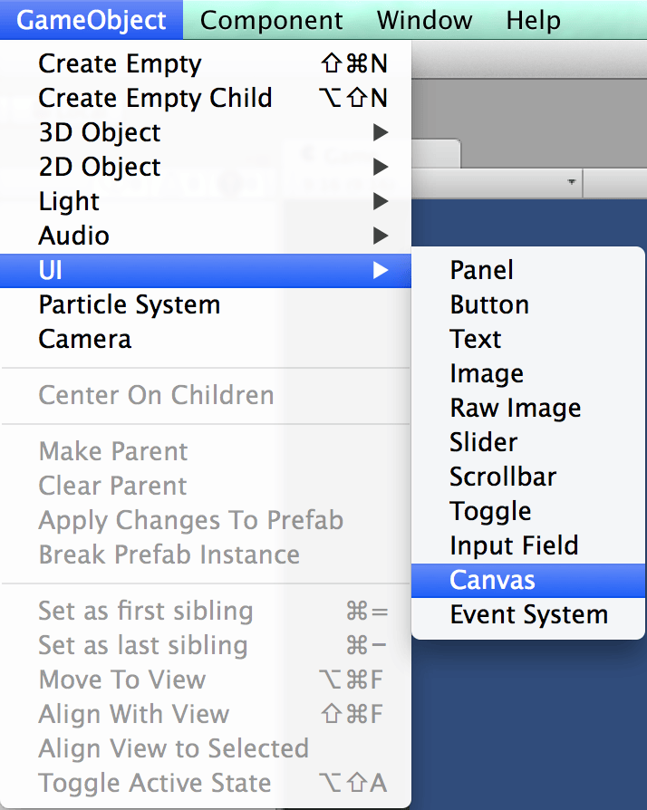
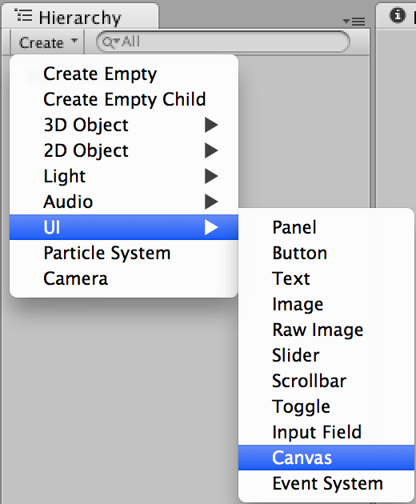
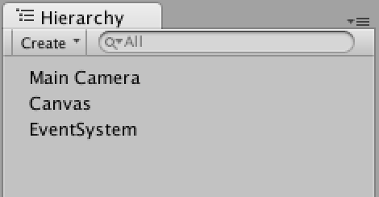
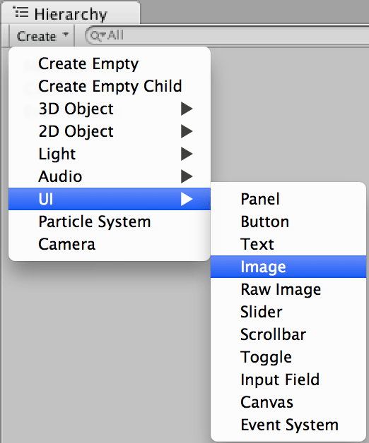
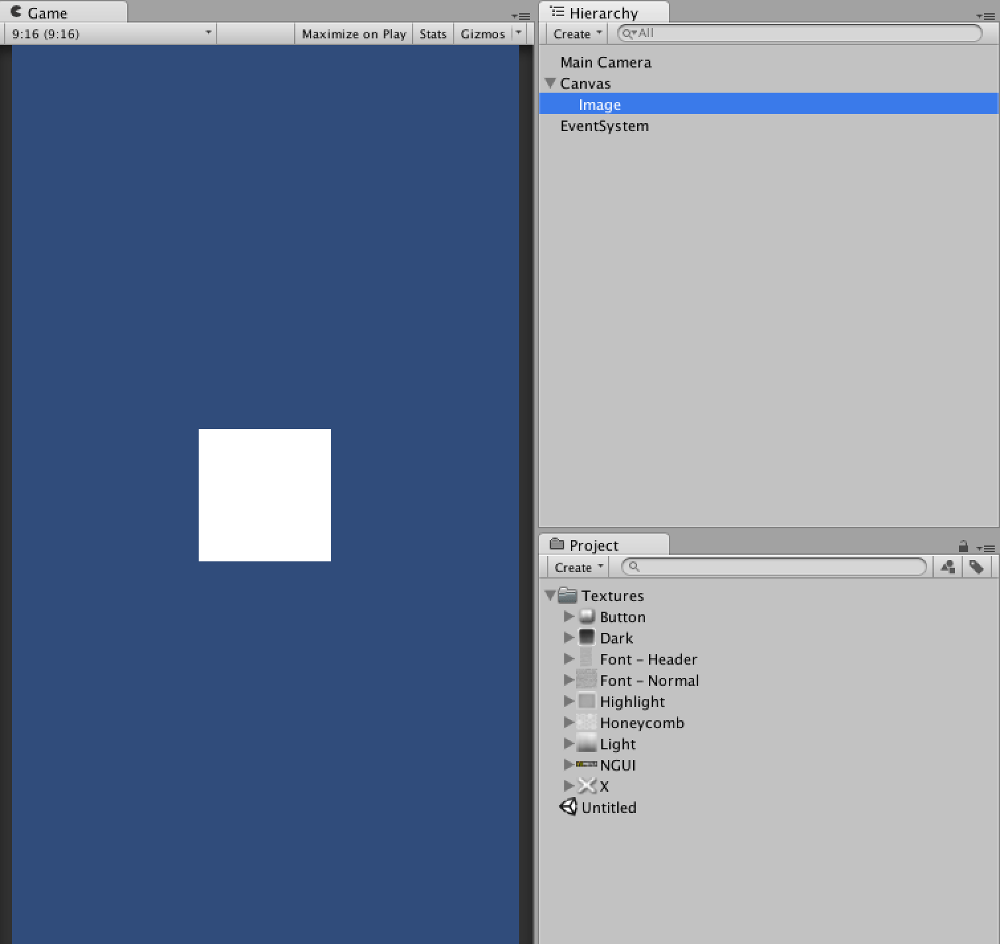
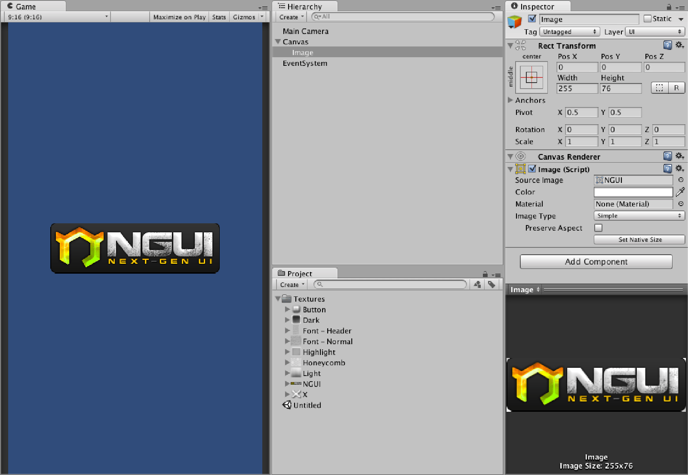

首先在 uGUI 中所有的 UI 都需要歸類在 Canvas 底下
可以將 Canvas 理解為畫板
創建 Canvas 可以透過下列方法


生成 Canvas 後
會在場景中新增 Canvas, EventSystem 兩個物件

接下來讓我們建立第一張圖片
建立圖片的方法和建立 Canvas 一樣

Image 生成時會自動對應到剛剛的 Canvas 中
如果場景中沒有 Canvas，則會自動生成

再來只要給予 Image 對應的設定
就可以完成第一張圖片的建立
